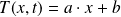
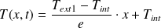
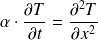
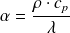
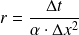

Finalisation du programme complet
Début du programme
Déclaration de toutes les constantes utiles dans le programme.
Question
Définir les variables epais (épaisseur du mur), conduc (conductivité thermique), rho (masse volumique), Cp (capacité thermique massique), Tint (température intérieure), Text1 (température extérieure pour les instants
), Text2 (température extérieure pour les instants
), N (nombre de points de calcul à l'intérieur du mur) et Dt (intervalle de temps élémentaire) et leur affecter les valeurs correspondant au problème physique défini au début de l'énoncé. On prendra un nombre de points de discrétisation
et un pas de temps
 de 25 secondes.
de 25 secondes.
epais = 40e-2
conduc = 1.65
rho = 2150
Cp = 1000
Tint = 293
Text1 = 283
Text2 = 263
epsilon = 1e-2
N = 60
Dt = 25
Remarque :
Personnellement, ces constantes sont intégrées dans les arguments de mes fonctions (éventuellement avec leurs valeurs par défaut) afin de ne pas avoir à utiliser ces variables globalement.
Question
Calculer les coefficients a et b tels que  . Le profil de température à l'instant initial a été déterminé dans la partie II.A., son équation est :

a = (Text1 - Tint) / epais
b = Tint
Question
Créer le vecteur x contenant les abscisses de tous les points de discrétisation dans la paroi. (voir la partie II.B.1 sur la discrétisation dans l'espace et dans le temps).
Dx = epais / (N + 1)
x = np.arange(Dx, epais - Dx / 2, Dx)
En raison des erreurs d'arrondis, il est nécessaire de s'arrêter un peu avant la valeur de epais, d'où le - Dx / 2.
Question
Calculer le vecteur des températures initiales T0.
T0 = np.zeros((N, 1))
for i in range(N):
T0[i, 0] = a * x[i] + b
Question
Dans la partie II.A., on a établi que  , avec  . Calculer alpha.
Dans les études préliminaires à l'élaboration de la méthode utilisant un schéma explicite, on a mis en évidence la constante  . Calculer r.
alpha = rho * Cp / conduc
r = Dt / (alpha * pow(Dx, 2))
Calcul des températures
Choix du schéma numérique.
Question
Écrire un morceau de programme qui demande à l'utilisateur quel schéma (explicite ou implicite) il souhaite utiliser et qui appelle la fonction correspondante.
fonctions = [schema_implicite, schema_explicite]
ind_fcts = int(input('''Choix du schema numerique :
0 : schema implicite1 : schema explicite'''))fct_schema(arguments) appellera alors la fonction avec le schéma demandé.
Analyse du résultat
Tracé des courbes et estimation de la durée du régime transitoire
Question
Écrire un morceau de programme permettant de tracer sur un même graphique le profil de température en fonction de x tous les 100 pas de temps.
Question
Faire afficher le temps en heures au bout duquel le régime permanent est établi.
print('La duree au bout duquel le regime permanent est etabli est de', \
Dt * nbIter / 3600, 'heures')
Voici les résultats obtenus.
Avec le schéma explicite :
La duree au bout duquel le regime permanent est etabli est de 12.444444444444445 heures
Avec le schéma implicite :
La duree au bout duquel le regime permanent est etabli est de 12.4375 heures